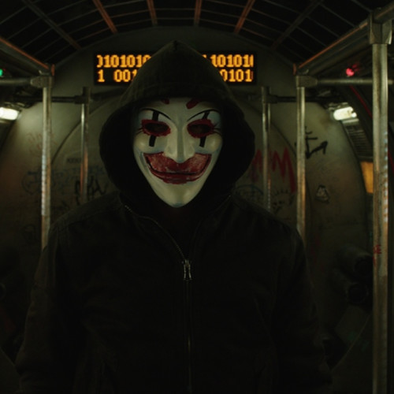

MI CV
Eduardo Becerril Abdon
Profesión
Tsu en Infraestructura en Redes Digitales
Contacto
eduardobecerril2507@gmail.com
5549441677
portafolipersonal.com
Formación
Tecnico Superior Universitario en Infraestructura en Redes Digitales en Universidad Tecnologica Fidel Velazquez
Curso de redes a nivel CCNA impartido por la empresa Teslag Training
Curso de Ciberseguridad impartido por la empresa Teslag Training